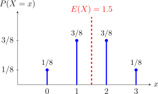
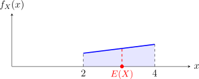

2.4 Mathematical Expectations and Generating Functions of Random Variables
While the p.m.f and p.d.f provide a complete description of a random variable, we often require concise numerical descriptors to summarize a distribution’s location and spread. This section moves from basic Expectations to the powerful “transform” methods—Generating Functions—which serve as essential tools for identifying distributions and simplifying the calculation of higher-order moments.
2.4.1 Expectations and Moments
Definition 2.4.1. Let \(X\) be a random variable the mean or expectation of the random variable \(X\) denoted by \(\mu \) or \(E(X)\) and it’s given by \[ E(X)= \begin {cases} \sum \limits _{\text {all}\, x}xf_X(x)=\sum \limits _{\text {all}\, x}xP(X=x), & \text {if}\quad X\quad \text {is discrete.}\\\\ \int \limits _{\text {all}\,x}xf_X(x)\, dx, &\text {if}\quad X\quad \text {is continuous}\\ \end {cases} \]
Example 2.4.2. Suppose we toss a fair coin three times. Let the random variable \(X\) represent the number of heads obtained. The probability mass function (PMF) of \(X\) is given by: \[f_X(x) = P(X = x) = \frac {\binom {3}{x}}{8}, \quad \text {for } x \in \{0, 1, 2, 3\}\] Find the expected value of \(X\).
Solution. The expected value is \[\begin {aligned} E(X) & = \sum _{x} x \cdot f_X(x)\\ &= \sum _{x=0}^{3} x \cdot \frac {\binom {3}{x}}{8} \\ &= \frac {1}{8} \left [ \sum _{x=0}^{3} x \cdot \binom {3}{x} \right ] \\ &= \frac {1}{8} \left [ 0 \cdot \binom {3}{0} + 1 \cdot \binom {3}{1} + 2 \cdot \binom {3}{2} + 3 \cdot \binom {3}{3} \right ] \\ &= \frac {1}{8} \left [ 0(1) + 1(3) + 2(3) + 3(1) \right ] \\ &= \frac {3 + 6 + 3}{8} = \frac {12}{8} \\ \mathbf {E(X)} &\mathbf {= 1.5} \end {aligned}\] Interpretation: If we were to repeat this experiment many times, we would expect to see an average of 1.5 heads per three tosses. Note that while the outcome \(1.5\) is not possible in a single trial, it represents the long-run theoretical mean. □

Example 2.4.3. Let \(X\) be a continuous random variable with the probability density function (pdf) defined by: \[f_X(x) = \begin {cases} \dfrac {x+1}{8}, & 2 < x < 4 \\ 0, & \text {otherwise} \end {cases}\] Calculating the Expected Value \(E(X)\).
Solution. \[\begin {aligned} E(X) & = \int _{-\infty }^{\infty } x \cdot f_X(x) \, dx\\ &= \int _{2}^{4} x \left (\frac {x+1}{8} \right ) dx \\ &= \frac {1}{8} \int _{2}^{4} (x^2 + x) , dx \\ &= \frac {1}{8} \left [\frac {x^3}{3} + \frac {x^2}{2} \right ]_{2}^{4} \\ &= \frac {1}{8} \left [ \left (\frac {64}{3} + 8 \right ) - \left ( \frac {8}{3} + 2 \right ) \right ] \\ &= \frac {1}{8} \left [ \frac {56}{3} + 6 \right ] = \frac {1}{8} \left [ \frac {56 + 18}{3} \right ] \\ &= \frac {74}{24} \\ & = \frac {37}{12} \end {aligned}\] □

Theorem 2.4.4. Let \(X\) be a random variable with probability function \(f_X(x)\), and \(g(x)\) be any function then the expectation of \(h(x)\) is given by \[ E(g(x))= \begin {cases} \sum \limits _xh(x)f_X(x), & \text {if}\quad X\quad \text {is discrete}\\\\ \int \limits _xh(x)f_X(x), &\text {if}\quad X\quad \text {is continuous}\\ \end {cases} \]
Theorem 2.4.6 (Properties of Expectations). Let \(X\) be a random variable, \(b\) and \(c\) be constants, \(g(x)\) and \(h(x)\) be functions, then
- \(E[b\, g(X)+c\, h(X)]=b\,E[g(X)] +c\,E[h(X)]\)
-
\(E[g(X) + b] = E[g(X)] + b\)
Proof. Suppose that \(X\) is a continuous random variable, then \begin {align*} E[g(X) + b] & = \int ^{\infty }_{-\infty } [g(X) + b]\, f_X(x)\, dx \\ & = \int ^{\infty }_{-\infty }g(X)\, f_X(x)\, dx + \int ^{\infty }_{-\infty } b\, f_X(x)\, dx\\ & = E[g(X)] + b\int ^{\infty }_{-\infty } f_X(x)\, dx\\ & = E[g(X)] + b. \end {align*}
This completes the proof. □
-
If \(g(X)\leq h(X)\), then \(E(g(X))\leq E(h(X))\)
Proof. Let \(g(x)=a\) and \(h(x)=b\), where \(a<b\). \begin {align*} E[g(X)] &=E(a)=a\\ E[h(X)] &=E(b)=b \end {align*}
Therefore, \(a<b \,\,\implies \,\, E[g(X)] < E[h(X)].\) □
- \(E[E(X)] = E(X)\)
Remark 2.4.7 (Special Expectations). If \(X\) is a random variable, then
- The \(k^{\text {th}}\) moment (about the origin): \[E(X^{k})\]
- The \(k^{\text {th}}\) moment about the mean: \[E\left [(X - \mu )^k\right ].\]
- The \(k^{\text {th}}\) factorial moment: \[E\left [X^{(k)}\right ]= E\left [X(X-1)(X-2)\, \cdots \, (X - k + 1)\right ]\]
Definition 2.4.8. Let \(X\) be a random variable with mean \(\mu \), then then variance of \(X\) denoted by \(\sigma ^2\) or Var\((X)\) is given by \[\sigma ^2=E(X-\mu )^2,\] where \(\mu =E(X)\), \(\sigma ^2>0\).
Computation formula of \(\sigma ^2\) is given by \begin {align*} \sigma ^2 &=E(X-\mu )^2\\ & =E[X-E(X)]^2\\ &=E[X^2-2XE(X)+E(X)^2]\\ &=E(X^2)-E[2XE(X)]+E[E(X)]^2\\ &=E(X^2)-2E(X)E(X)+[E(X))]^2\\ &=E(X^2)-2[E(X)]^2+[E(X)]^2\\ &=E(X^2)-[E(X)]^2. \end {align*}
Example 2.4.9. Using Example 2.4.2, we found the mean \(E(X) = 1.5\). Now we find the variance \[\operatorname {Var}(X) = E(X^2) - E[E(X)]^2.\] First we find \(E(X^2)\). \[\begin {aligned} E(X^2) & = \sum _x x^2\cdot f_X(x)\\ &= \sum _{x=0}^{3} x^2 \cdot \frac {\binom {3}{x}}{8} \\ &= \frac {1}{8} \left [ 0^2\binom {3}{0} + 1^2\binom {3}{1} + 2^2\binom {3}{2} + 3^2\binom {3}{3} \right ] \\ &= \frac {1}{8} \left [ 0(1) + 1(3) + 4(3) + 9(1) \right ] \\ &= \frac {24}{8}\\ & = 3. \end {aligned}\]
Now, substitute \(E(X^2) = 3\) and \(E(X) = 1.5\) into the variance formula: \[\begin {aligned} \operatorname {Var}(X) &= E(X^2) - [E(X)]^2 \\ &= 3 - (1.5)^2 \\ &= 3 - 2.25 \\ &= 0.75 \end {aligned}\]
Example 2.4.10. In Example 2.4.3 we calculated the mean to be \(E(X) = \frac {37}{12}\). Now, we find \(E(X^2)\) and subsequently the variance. \[\begin {aligned} E(X^2) &= \int _{2}^{4} x^2 \left ( \frac {x+1}{8} \right ) dx \\ &= \frac {1}{8} \int _{2}^{4} (x^3 + x^2) \, dx \\ &= \frac {1}{8} \left [ \frac {x^4}{4} + \frac {x^3}{3} \right ]_{2}^{4} \\ &= \frac {1}{8} \left [ \left ( \frac {256}{4} + \frac {64}{3} \right ) - \left ( \frac {16}{4} + \frac {8}{3} \right ) \right ] \\ & = \frac {236}{24} = \frac {59}{6} \end {aligned}\] Now, we substitute \(E(X^2) = \frac {59}{6}\) and \(E(X) = \frac {37}{12}\) into the variance formula: \[\begin {aligned} \operatorname {Var}(X) &= E(X^2) - [E(X)]^2 \\ &= \frac {59}{6} - \left ( \frac {37}{12} \right )^2 \\ &= \frac {59}{6} - \frac {1369}{144} \\ &= \frac {59 \times 24}{144} - \frac {1369}{144} \\ &= \frac {1416 - 1369}{144} \\ & = \frac {47}{144}. \end {aligned}\]
Theorem 2.4.11. If \(X\) is a random variable with mean \(\mu \) and variance \(\sigma ^2\), then \[\operatorname {Var}(aX + b) = a^2 \, \operatorname {Var}(X),\] where \(a\) and \(b\) are any real constants.
Proof. \begin {align*} \operatorname {Var}(aX + b) & = E\left ([(aX + b) - \mu _{aX + b}]^2\right )\\ & = E\left ([(aX + b) - E(aX + b)]^2\right )\\ & = E\left ([aX + b - aE(X) - b]^2\right )\\ & = E\left ([aX - aE(X)]^2\right )\\ & = E\left (a^2 [X - E(X)]^2\right )\\ & = a^2E\left ([X-\mu ]^2\right )\\ & = a^2\, \operatorname {Var}(X). \end {align*} □
- The mean is the balance point (the center of gravity) where the seesaw stays level. while, the variance describes how the weight is spread out. In physics, this is called the moment of inertia.
- Th square root of the Var\((X)\) is called the standard deviation of \(X\), that is \[\sigma _X = \sqrt {\text {Var}(X)}.\]
Exercise 2.4.13. Let \(X\) have the p.d.f \[f_X(x) = \begin {cases} \frac {2x}{k^2}, & 0\leq x \leq k\\ 0, & \text {otherwise}. \end {cases}\] For what value of \(k\) is the variance of \(X\) equal to 2?
2.4.2 Probability Generating Functions (PGFs)
For discrete random variables taking non-negative integer values, the PGF acts as a powerful “storage device” where the individual probabilities of the distribution are encoded as the coefficients of a power series.
Definition 2.4.14. For a discrete random variable \(X\), the PGF, denoted by \(G_X(t)\), is defined as \[G_X(t) = E(t^X) = \sum _{x=0}^{\infty } t^x P(X=x)\] for all values of \(t \in \mathbb {R}\) for which the power series converges.
Remark 2.4.15. The three key properties of PGF include:
- Evaluating the PGF at \(t=1\) must always equal 1, as it represents the sum of all probabilities in the sample space: \[G_X(1) = \sum _{x=0}^{\infty } P(X=x) = 1\]
- The individual probabilities can be recovered by taking the \(k\)-th derivative of the PGF and evaluating it at \(t=0\): \[P(X=k) = \frac {G_X^{(k)}(0)}{k!}\]
- The derivatives of the PGF evaluated at \(t=1\) generate what is call factorial moments. The first derivative gives the mean: \[G_X'(1) = E(X)\] The second derivative provides the second factorial moment, which is used to calculate variance: \[G_X''(1) = E[X(X - 1)] = E(X^2) - E(X).\] Therefore \[\operatorname {Var}(X) = G''_X(1) + G'_X(1) - [G'_X(1)]^2.\]
Example 2.4.16. Consider the following discrete probability distribution
| \(x\) | 2 | 4 | 5 | 10 |
| \(P(X=x)\) | 0.1 | 0.2 | 0.3 | 0.4 |
Find the Probability Generating Function, \(G_X(t)\).
Solution. By definition, the PGF is the expected value of \(t^X\) \begin {align*} G_X(t) & = \sum _{x} t^x P(X=x) \\ & = t^2 P(X=2) + t^4 P(X=4) + t^5 P(X=5) + t^{10} P(X=10) \\ &= 0.1t^2 + 0.2t^4 + 0.3t^5 + 0.4t^{10} \end {align*} □
Example 2.4.17. In a game, the probability that \(A\) wins on her \(x\)th go can can be described as a discrete random variable \(X\), with probability function \[P(X = x) = \frac {1}{2^x}\,,\quad \text {for}\,\, x = 1,2, 3, 4, \cdots \]
-
Find the probability generating function.
Solution. Note that \[P(X = 1) = \frac {1}{2}, \quad P(X = 2) = \frac {1}{2^2}, \quad P(X = 3) = \frac {1}{2^3}, \quad P(X = 4) = \frac {1}{2^4}, \quad \cdots \] \begin {align*} G_X(t) & = \sum _x t^x P(X = x)\\ & = \frac {1}{2}t + \frac {1}{2^2}t^2 + \frac {1}{2^3}t^3 + \frac {1}{2^2}t^4+ \cdots \\ & = \sum ^{\infty }_{x = 1}\left (\frac {t}{2}\right )^x \end {align*}
Note that the “standard geometric series” is usually presented as: \[\sum _{n=0}^{\infty } r^n = \frac {1}{1-r}\] However, if you start at \(n=1\), you are simply missing the first term (\(r^0 = 1\)): \[\sum _{n=1}^{\infty } r^n = \left (\sum _{n=0}^{\infty } r^n\right ) - 1 = \frac {1}{1-r} - 1 = \frac {r}{1-r}.\]
Thus, the closed-form PGF is \[G_X(t) = \frac {\frac {t}{2}}{1 - \frac {t}{2}} = \frac {t}{2-t}, \quad \text {for } |t| < 2.\] □
-
Find \(E(X)\) and \(\operatorname {Var}(X)\).
Solution. The mean \(E(X)\), \[G_X'(t) = \frac {(2-t)(1) - t(-1)}{(2-t)^2} = \frac {2-t+t}{(2-t)^2} = \frac {2}{(2-t)^2}\] Evaluating at \(t=1\), \[E(X) = G_X'(1) = \frac {2}{(2-1)^2} = 2.\]
The variance \(\text {Var}(X)\). \(G_X''(1)\): \[G_X''(t) = \frac {d}{dt} [2(2-t)^{-2}] = 2(-2)(2-t)^{-3}(-1) = \frac {4}{(2-t)^3}\] Evaluating at \(t=1\), \[G_X''(1) = \frac {4}{(2-1)^3} = 4\]
Now, use the variance formula for PGFs. \[\text {Var}(X) = G_X''(1) + G_X'(1) - [G_X'(1)]^2\] \[\text {Var}(X) = 4 + 2 - (2)^2 = 6 - 4\] \[\text {Var}(X) = 2.\] □
2.4.3 Moment Generating Functions (MGFs)
There are some distributions whose moments are difficult to compute from the definition. A moment generating function is a real valued function from which one can generate all the moments of a given random variable.
Definition 2.4.18 (Moment Generating function (m.g.f)). Let \(X\) be a random variable with probability function \(f_X(x)\) then the moment generating function of \(X\) is denoted by \(M_X(t)\) and given by \(M_X(t)=E(e^{tx})\). \[ M_X(t)= \begin {cases} \sum \limits _xe^{tx}P(X=x),&\text {if}\hspace {0.3cm} X\hspace {0.3cm} \text {is discrete}\\\\ \int \limits _xe^{tx}f_X(x)dx &\text {if}\hspace {0.3cm}X\hspace {0.3cm} \text {is continuous}\\ \end {cases} \]
The exponential series \[e^y =\sum ^{\infty }_{k=0}\frac {y^k}{k!} =1+y+\frac {y^2}{2!}+\frac {y^3}{3!}+\cdots \] If \(\, y = 1\), \[e=1+1+\frac {1}{2}+\frac {1}{3!}+\frac {1}{4!}+\cdots \]
- We only need \(M_X(t)\) to be defined in the neighbourhood of zero i.e \(t\in (-\varepsilon ,\varepsilon )\) for any \(\varepsilon >0\).
- Not every random variable has a moment generating function. But if the moment generating function of a random variable exists, then it is unique.
-
The m.g.f is used to generate moments i.e \(E(X^k)\) is known as the \(k^{\text {th}}\) raw moment. \[E(X) =\frac {d}{dt}M_X(t)\Bigg |_{t=0}\]
\[E(X^2) =\frac {d}{dt}\left [\frac {d}{dt}M_X(t)\right ]_{t=0} \, =\, \frac {d^2}{dt^2}M_X(t)\Bigg |_{t=0}\]
\[\sigma ^2 =E(X^2)-(E(X))^2.\]
Example 2.4.20. What is the moment generating function of the random variable \(X\) whose p.d.f is given by \[f_X(x) = e^{-x}\, \, \quad x > 0.\] What are the mean and variance of \(X\)?
Solution. The moment generating function of \(X\) is \begin {align*} M_X(t) & = E(e^{tX})\\ & = \int ^{\infty }_0 e^{tx}\, e^{-x}\, dx\\ & = \int ^{\infty }_0e^{-(1-t)}\, dx\\ & = \frac {1}{1-t}\left [-e^{-(1-t)x}\right ]^{\infty }_0\\ & = \frac {1}{1-t}\, ,\quad 1 - t > 0. \end {align*}
The expected value of \(X\) is \begin {align*} E(X) & = \frac {d}{dt}\, M_X(t)\Bigg |_{t = 0}\\ & = (-1)(-1)(1-t)^{-2}\Big |_{t =0}\\ & = \frac {1}{(1-t)^2}\Bigg |_{t = 0}\\ & = 1. \end {align*}
Similarly \begin {align*} E(X^2) & = \frac {d^2}{dt^2}\, M(t)\Bigg |_{t = 0}\\ & = \frac {(-1)(-2)}{(1 - t)^3}\Bigg |_{t = 0}\\ & = \frac {2}{(1 - t)^3}\Bigg |_{t = 0}\\ & = 2. \end {align*}
Hence, the variance of \(X\) is \[\operatorname {Var}(X) = E(X^2) - [E(X)]^2 = 2 - 1 = 1.\] □
Theorem 2.4.21. Let \(M_X(t)\) be the moment generating function of the random variable \(X\). If \begin {equation} \label {eq:mgf-taylor} M_X(t) = a_0 + a_1t + a_2t^2 +\, \cdots \, a_nt^n + \, \cdots \end {equation} is the Taylor series expansion of \(M_X(t)\), then \[E(X^n) = (n!)\, a_n\] for \(n \in \mathbb {R}\).
Proof. Let \(M_X(t)\) be the m.g.f. of the random variable \(X\). The Taylor series expansion of \(M_X(t)\) about zero is given by \[M_X(t) = M(0) + \frac {M'(0)}{1!}t + \frac {M''(0)}{2!}t^2+ \frac {M'''(0)}{3!}t^3 + \cdots + \frac {M^{(n)}(0)}{n!}t^n+ \cdots \] Since \(\, E(X^n) = M^{(n)}(0)\,\) for \(n\geq 1\) and \(M(0) = 1\), we have \begin {equation} \label {eq:mgf-moments} M(t) = 1 + \frac {E(X)}{1!}t + \frac {E(X^2)}{2!}t^2 + \frac {E(X^3)}{3!}t^3 + \cdots + \frac {E(X^n)}{n!}t^n + \cdots \end {equation} Comparing (2.1) and (2.2), equating the coefficients of the like powers of \(t\), we obtain \[a_n = \frac {E(X^n)}{n!}\, \implies \, E(X^n) = (n!)\, a_n.\] Hence the proof. □
Example 2.4.22. Find the 99\(^{\text {th}}\) moment of \(X\) about the origin, if the moment generating function of \(X\) is \(M_X(t) = \frac {1}{1 + t}\)?
Solution. The Taylor series expansion of \(M_X(t)\) is \begin {align*} M_X(t) & = \frac {1}{1+t} = \frac {1}{1 - (-t)}\\ & = 1 + (-t) + (-t)^2 + (-t)^3 + \cdots + (-t)^n+ \cdots \\ & = 1 - t + t^2 - t^3 + \cdots + (-1)^nt^n + \cdots \end {align*}
Therefore, \(a_n = (-1)^n\) and we get \(a_{99} = -1\). Thus, \[E(X^{99}) = (99!)a_{99} = -99!\] □
2.4.4 Characteristic Functions
Definition 2.4.23. If a random variable does not have a well-defined moment generating function m.g.f, we can use the characteristic function as \[\phi _X(t) = E\left [e^{itX}\right ],\] where \(i = \sqrt {-1}\) and \(t\) is a real number.
Theorem 2.4.24. Some of the properties of the characteristic function include
- \(\phi _X(t)\) is defined for all \(t\in \mathbb {R}.\)
-
\(\left |\phi _X(t)\right | \leq \phi _X(0) = 1.\)
Proof. Since \(\left |e^{itX}\right | = 1\), then \[\left |\phi _X(t)\right | = \left |E\left [e^{itX}\right ]\right | \leq E\left [\left |e^{itX}\right |\right ] \leq 1.\] □
- If the \(n^{\text {th}}\) moment \(E(X^n)\) exits, it can be found by differentiating the function \(k\) times at the origin: \[E(X^n) = \frac {1}{i^n}\left [\frac {d^n}{dt^n}\phi _X(t)\right ]_{t = 0}.\]
- If you shift or scale a random variable (e.g., \(Y = aX + b\)), then \[\phi _{aX + b}(t) = e^{itb}\, \phi _X(at).\]
Example 2.4.25. Let \(X\) be a random variable with a p.d.f \[f_X(x) = \lambda \, e^{-\lambda x}, \quad x > 0.\] Use the characteristic function to find the mean.
Solution. Derive the characteristic function \begin {align*} \phi _X(t) & = E\left [e^{itX}\right ]\\ & = \int _0^{\infty }e^{itx}\, \lambda e^{-\lambda x}\, dx\\ & = \lambda \int ^{\infty }_0 e^{-(\lambda - it)x}\, dx\\ & = \lambda \left [-\frac {e^{-(\lambda - it)}}{(\lambda - it)}\right ]^{\infty }_0\\ & = \frac {\lambda }{\lambda - it}. \end {align*}
Then first derivative \((n = 1)\) \[\phi '_X(t) = \lambda (-1)(-i)(\lambda - it)^{-2} = \frac {i\lambda }{(\lambda - it)^2}.\] The mean \[E(X) = \frac {1}{i}\, \phi '_X(0) = \frac {1}{i}\left (\frac {i\lambda }{\lambda ^2}\right ) = \frac {1}{\lambda }.\] □
2.4.5 Practice problems
Problem 2.4.1. [Tutorial Sheet 3] For each of the following p.f./p.d.f.s derive the moment generating function \(M_X(t)\). State the range of values of \(t\) for which the moment generating function is valid, and use it to find the mean and variance of \(X\).
- \(f(x) = pq^{x}\), \(x = 0,1,2,\ldots \)
- \(f(x) = \dbinom {-k}{x}p^{k}(-q)^{x}\), \(x = 0,1,2,\ldots \)
- \(f(x) = \dfrac {e^{-x/\theta }}{\theta }\), \(x>0\)
- \(f(x) = \dfrac {x^{\alpha -1}e^{-x/\beta }}{\beta ^{\alpha }\Gamma (\alpha )}\), \(x>0\)
Show solution
Solution. Throughout, \(M_X(t) = E(e^{tX})\), and the mean and variance come from \[E(X) = M_X'(0), \qquad \operatorname {Var}(X) = M_X''(0)-\left [M_X'(0)\right ]^{2}.\] In every case the range of \(t\) is dictated by where the sum or integral converges.
(a). This is the geometric distribution counting failures before the first success, with \(q = 1-p\). The sum is geometric with ratio \(qe^{t}\): \[M_X(t) = \sum _{x=0}^{\infty }e^{tx}pq^{x} = p\sum _{x=0}^{\infty }\left (qe^{t}\right )^{x} = \frac {p}{1-qe^{t}},\] which converges precisely when \(qe^{t}<1\), that is for \(t < \ln \left (\tfrac {1}{q}\right )\). Differentiating, \[M_X'(t) = \frac {pqe^{t}}{\left (1-qe^{t}\right )^{2}} \implies E(X) = \frac {pq}{(1-q)^{2}} = \frac {pq}{p^{2}} = \frac {q}{p},\] and a second differentiation gives \(M_X''(0) = \dfrac {q(1+q)}{p^{2}}\), so \[\operatorname {Var}(X) = \frac {q(1+q)}{p^{2}}-\frac {q^{2}}{p^{2}} = \frac {q}{p^{2}}.\]
(b). This is the negative binomial written with a negative upper index. The identity \[\binom {-k}{x}(-1)^{x} = \binom {k+x-1}{x}\] turns it into the familiar form \(\binom {k+x-1}{x}p^{k}q^{x}\): the number of failures before the \(k\)th success. Using the binomial series \((1+z)^{-k} = \sum _{x\geq 0}\binom {-k}{x}z^{x}\) with \(z = -qe^{t}\), \[M_X(t) = p^{k}\sum _{x=0}^{\infty }\binom {-k}{x}\left (-qe^{t}\right )^{x} = p^{k}\left (1-qe^{t}\right )^{-k} = \left (\frac {p}{1-qe^{t}}\right )^{\!k},\] valid for \(t<\ln \left (\tfrac 1q\right )\) as before. This is the \(k\)th power of the m.g.f. in part (a) – exactly what one expects, since a negative binomial is the sum of \(k\) independent geometrics. Hence \[E(X) = \frac {kq}{p}, \qquad \operatorname {Var}(X) = \frac {kq}{p^{2}}.\]
(c). This is the exponential distribution with mean \(\theta \): \[M_X(t) = \int _0^{\infty }e^{tx}\frac {e^{-x/\theta }}{\theta }\,dx = \frac {1}{\theta }\int _0^{\infty }e^{-x\left (\frac {1}{\theta }-t\right )}dx = \frac {1}{\theta }\cdot \frac {1}{\frac {1}{\theta }-t} = \frac {1}{1-\theta t}.\] The integral converges only if \(\tfrac {1}{\theta }-t>0\), so the m.g.f. is valid for \(t<\tfrac {1}{\theta }\). Then \[M_X'(t) = \frac {\theta }{(1-\theta t)^{2}},\qquad M_X''(t) = \frac {2\theta ^{2}}{(1-\theta t)^{3}},\] giving \(E(X) = \theta \) and \(\operatorname {Var}(X) = 2\theta ^{2}-\theta ^{2} = \theta ^{2}\).
(d). This is the gamma distribution with shape \(\alpha \) and scale \(\beta \). \[M_X(t) = \int _0^{\infty }e^{tx}\frac {x^{\alpha -1}e^{-x/\beta }}{\beta ^{\alpha }\Gamma (\alpha )}dx = \frac {1}{\beta ^{\alpha }\Gamma (\alpha )}\int _0^{\infty }x^{\alpha -1} e^{-x\left (\frac {1}{\beta }-t\right )}dx.\] The remaining integral is a gamma integral: substituting \(u = x\left (\tfrac {1}{\beta }-t\right )\) gives \(\Gamma (\alpha )\left (\tfrac {1}{\beta }-t\right )^{-\alpha }\), so \[M_X(t) = \frac {\left (\frac {1}{\beta }-t\right )^{-\alpha }}{\beta ^{\alpha }} = (1-\beta t)^{-\alpha }, \qquad t<\frac {1}{\beta }.\] Then \[M_X'(t) = \alpha \beta (1-\beta t)^{-\alpha -1},\qquad M_X''(t) = \alpha (\alpha +1)\beta ^{2}(1-\beta t)^{-\alpha -2},\] so \(E(X) = \alpha \beta \) and \[\operatorname {Var}(X) = \alpha (\alpha +1)\beta ^{2}-\alpha ^{2}\beta ^{2} = \alpha \beta ^{2}.\] Setting \(\alpha = 1\) recovers part (c), as it must: the exponential is a gamma with shape 1.
Questions on this section
Stuck on something here? Ask below and it stays attached to this topic.
Discussion will be enabled when the site goes live.